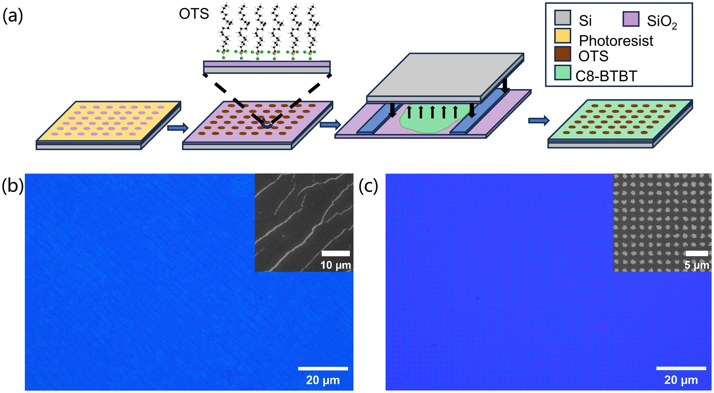
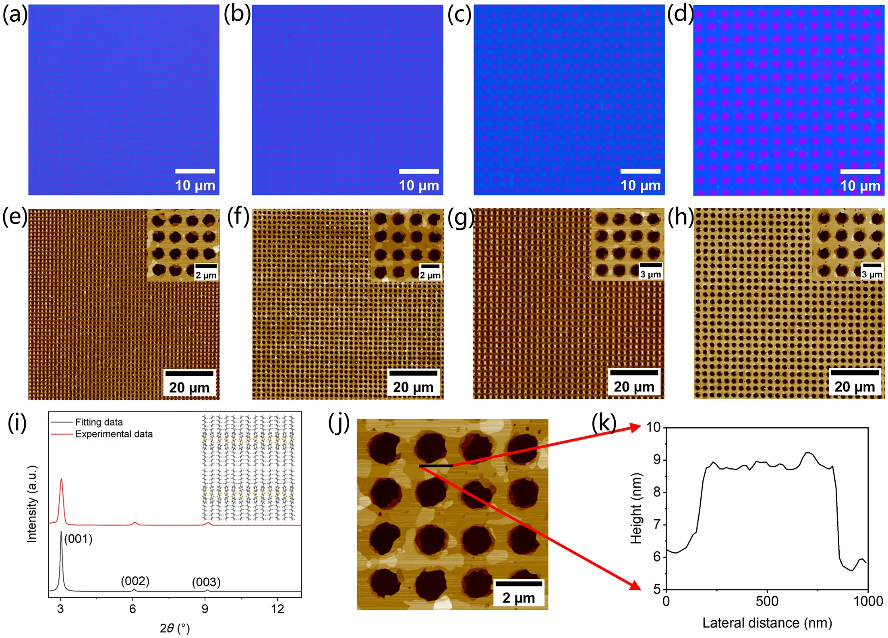
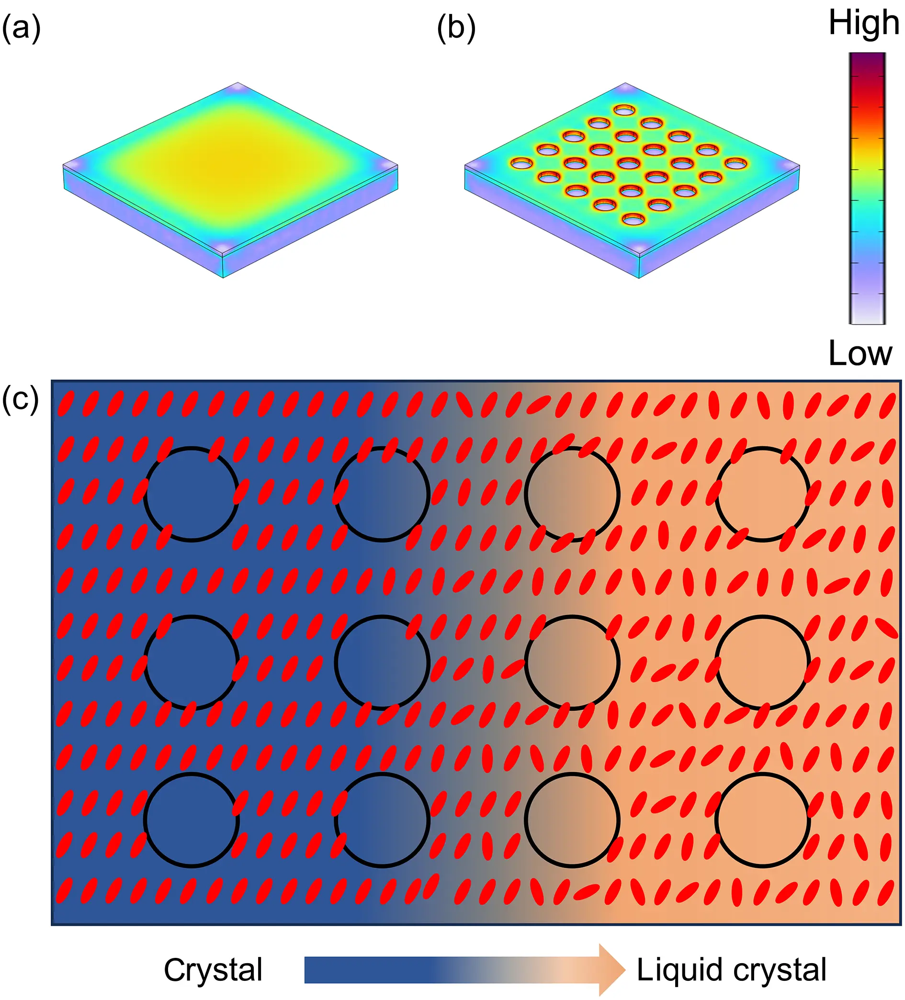
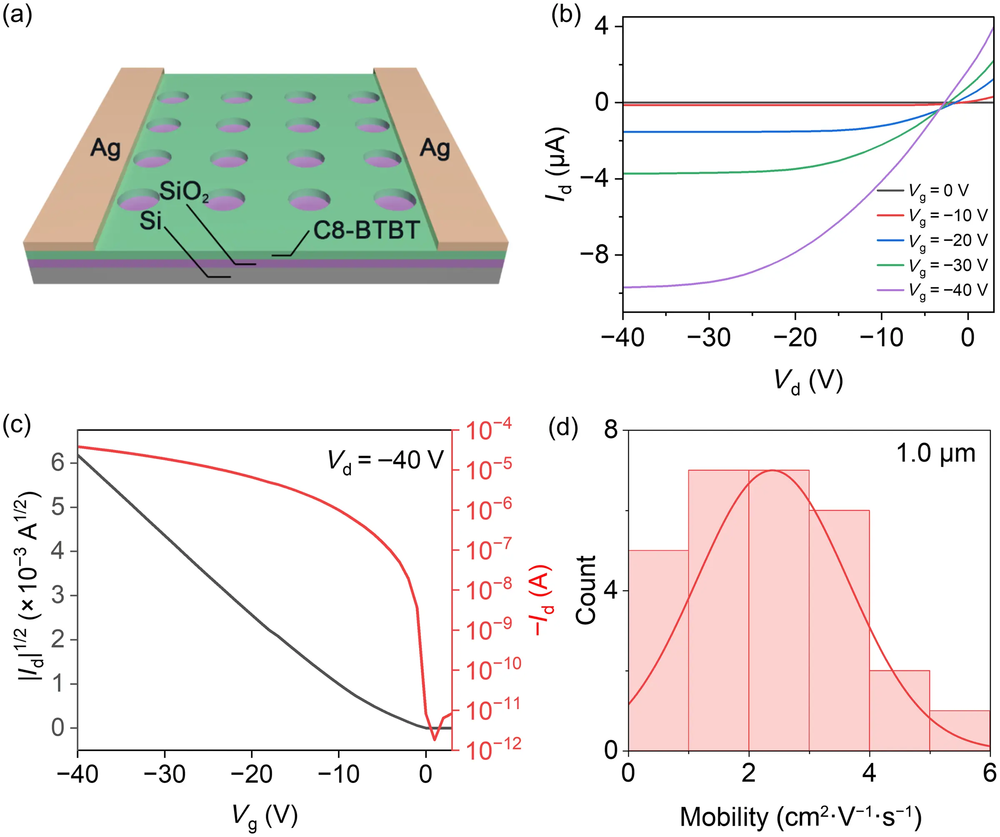
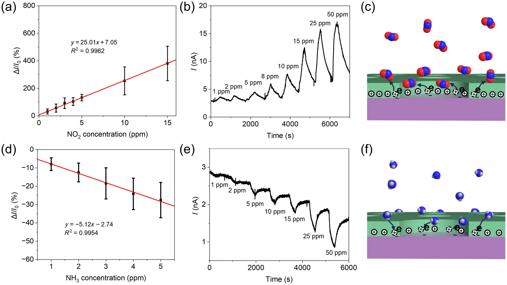

多孔有机单晶：兼顾电荷输运与气体接触
用 OTS 点阵预先定义孔的位置
光刻先在 SiO₂ 表面形成规则图形，再通过 OTS 修饰得到疏水点阵。微间距升华过程中，具有液晶特征的 C8-BTBT 分子在基底上扩展并形成大面积单晶膜；冷却收缩时，疏水点阵优先释放热应力，于是孔洞在预设位置产生，而不是随机开裂。改变点阵尺寸和间距即可调节孔径及孔密度。

孔径可调，同时保持单晶连续性
作者制备了孔径和间距均为 0.8、1.0、1.2 与 1.5 μm 的阵列，光学显微镜与 AFM 均显示规则孔结构且没有明显随机裂纹。XRD 在 3.03°、6.05° 与 9.13° 出现清晰衍射峰，分别对应 (001)、(002) 与 (003) 晶面；AFM 测得 3.03 ± 0.06 nm 的分子层台阶，表明 C8-BTBT 沿 c 轴有序堆叠并形成连续单晶薄膜。

让热应力在预设孔位释放，而不是随机开裂
有限元结果显示，连续薄膜冷却时会在膜内积累热应力；加入疏水点阵后，应力集中转移至点阵边缘，并由局部分子滑移释放。C8-BTBT 从液晶态转变为晶态时体积收缩，若点阵间距不超过约 2.0 μm，潜在裂纹位置会被规则孔阵列分隔，薄膜整体连续性因此得到保持。

引入规则孔洞后，电荷输运仍保持较高水平
多孔单晶构成底栅顶接触 OFET 的有源层，器件表现出典型 p 型输出与转移特性。28 个器件的平均饱和迁移率为 2.40 cm²·V⁻¹·s⁻¹，最高为 5.16 cm²·V⁻¹·s⁻¹。与无孔条带单晶相比，迁移率虽略有下降，但仍处于较高水平，说明孔阵列没有破坏长程有序的主要输运路径。

多孔通道同时提高气体接触面积与响应速度
NO₂ 在 1–15 ppm 范围内的灵敏度为 25.01 %·ppm⁻¹，计算检测限为 2.14 ppb；1 ppm 时平均相对响应为 31.19%。NH₃ 在 1–5 ppm 范围内的灵敏度为 −5.12 %·ppm⁻¹，计算检测限为 18.10 ppb。NO₂ 作为电子受体增加 p 型沟道中的空穴浓度，使电流上升；NH₃ 作为电子给体补偿空穴，使电流下降。贯通孔道缩短气体到达沟道的路径，因此相较条带单晶具有更快的响应与恢复。

论文来源
Fabrication and application of porous organic single-crystal films in highly sensitive gas sensors
Zhangjin Chen, Suhui Wang, Mingke Yu, Peng Li, Xu Zhang, Hong Wang, Tengxiao Guo, Chuan Liu
Nano Research 18 (2025), 94907299
DOI：10.26599/NR.2025.94907299